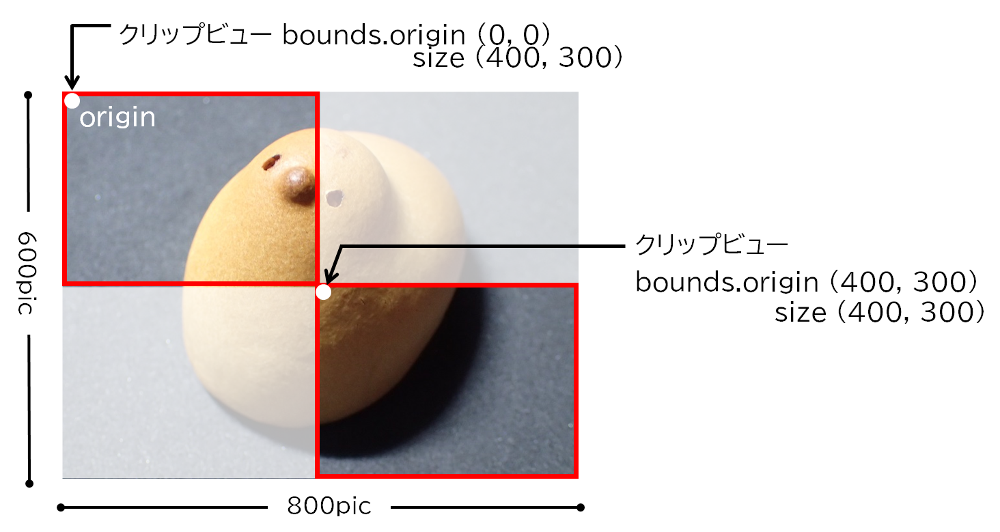

スクロールビュー
スクロールビューは、大きすぎて特定の表示領域に収まらないビューオブジェクト、例えば画像などを表示するときに使用する。
表示するのに適当なの大きさのスクロールビューを定義し、表示したい画像（ビューオブジェクト）を埋め込む。画像がスクロールビューより大きい場合、画像は一部分だけ表示される。
ユーザはスクロールビューに付属するスクロールバーを使用して画像を移動させ、任意の部分をビューに表示することができる
スクロールビューの構造
スクロールビューは、外側からスクロールビュー（NSScrollView）、クリップビュー（NSClipView）、表示対象のビュー（NSViewやそのサブクラス）の３層構造となる。
スクロールビューはクリップビューを保有し、ビュー全体を制御する。クリップビューは、スクロールビューからスクロールバーを除いた領域で、表示対象のビューのうち、現在表示中の部分に対応する
実装方法
スクロールビューオブジェクトをプログラムから作成する
スクロールビューには、ビューの領域に対し縦横が約２倍の大きさ画像を表示する。表示対象のビューオブジェクトは、documentViewプロパティにセットする。
表示画像の移動は垂直/水平スクロールバーにより行う。スクロールバーはスクロールビュークラスの組み込み機能なので、実装ではスクロールバーを使用可能にするだけで良い。
ボタンのクリックにより画像を移動する
例題ではボタンにより画像を上下左右の端まで移動させている。
クリップビューに表示されている画像の領域はクリップビューのboundsプロパティと一致する。boundsには、全体の画像ビューに対して、表示中の画像の矩形の原点と幅と高さを保持している。なお画像ビューのFlippedをYESにしておけば、矩形の原点を左上方向にすることができる。
画像を移動するには移動先の位置（座標）を指定してNSClipViewクラスのscrollPointメソッドを呼ぶ。座標は、boundsプロパティのoriginに相当する。クリップビューオブジェクトは、スクロールビューのcontentViewプロパティから参照する。
下の例でいえば、右下の画像を表示するには、座標(400, 300)を指定する。

スクロールバーの移動およびマウスのホイールの回転により画像を移動する
通知センター（NSNotificationCenterクラス）を利用して、スクロールにより画像が移動したときの通知を受け取ることができる。
例題では、クリップビュー（contentView）に表示している画像の原点をテキストフィールドに表示している。
ソースコード
AppDelegate スクロールビューの作成・制御
UAImageView 画像ビュー
UAView ベースビュー
スクロールビューをプログラムから作成する（Swift）
スクロールバーの幅
スクロールビューのサイズとコンテントサイズの差となる。borderTypeによって、15〜19ピクセルになる。
テーブルビューについて
インタフェースビルダーでテーブルビューを作成すると、テーブルビューを含んだスクロールビューが作成される。
![[scrollview05]](/lib/HTMLofImage.html?filename=/data/67/scrollview05.png&title=scrollview05&width=700)
テーブルビュー（NSTableViewクラス）は単独では動作せず、スクロールビューの要素として動作することが前提となっている。テーブルビューは列の幅や行の数が可変になることが多く、大体において限られたスペースに全ての行列を表示することが困難であり、ビューをスクロールする機能が必要となる。
方法は、本章で説明したようテーブルビューオブジェクトをスクロールビューのdocumentViewに埋め込めばよい。
次の例は、プログラムによりテーブルビューを作成したものである。左がインタフェースビルダで、右がプログラムで作成したもの。同じ形状になるようにした。
テーブルビューは構造が複雑で、それらの設定を全てプログラムで行うのはかなり面倒そうである。あえてプログラムで作ることの必要性もあまり思いつかない。こんな構造になってますという紹介まで。